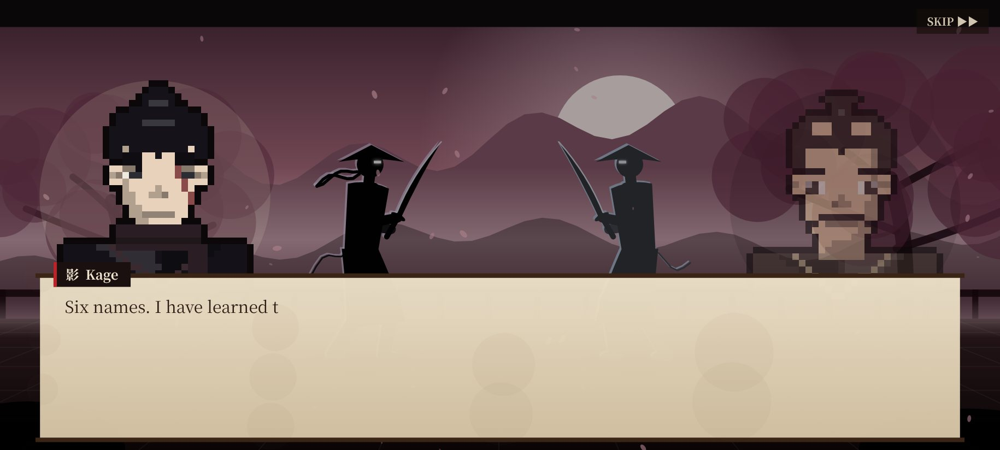
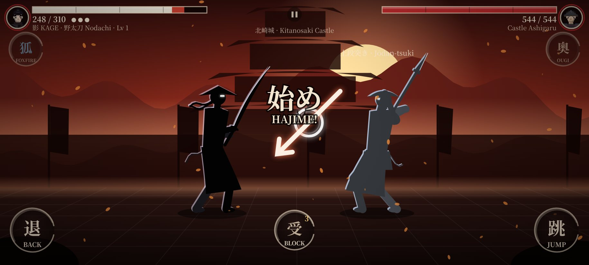
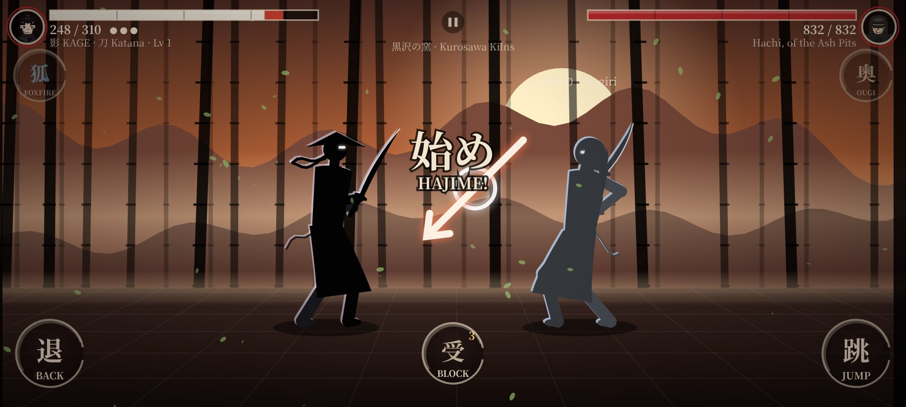
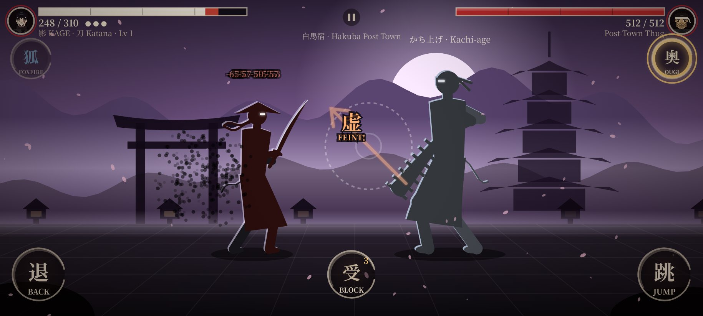
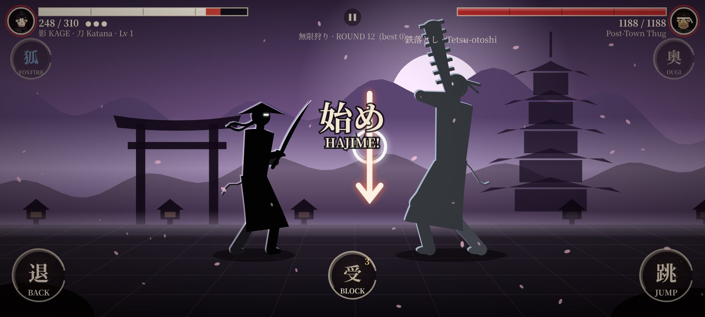
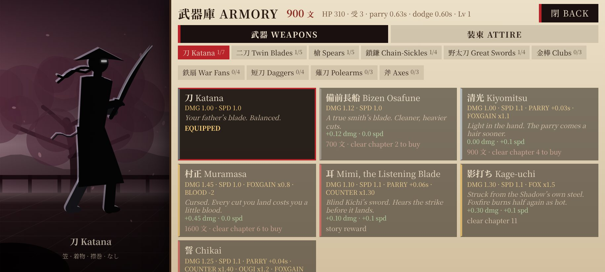
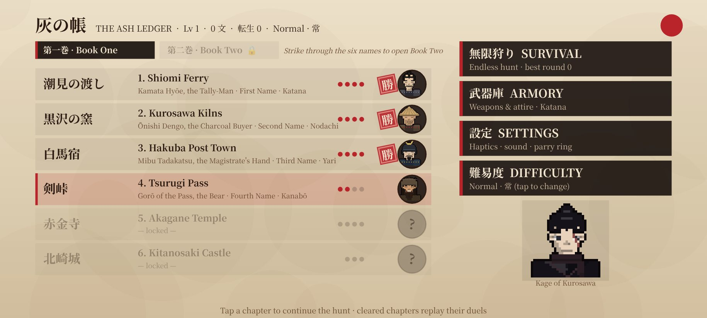
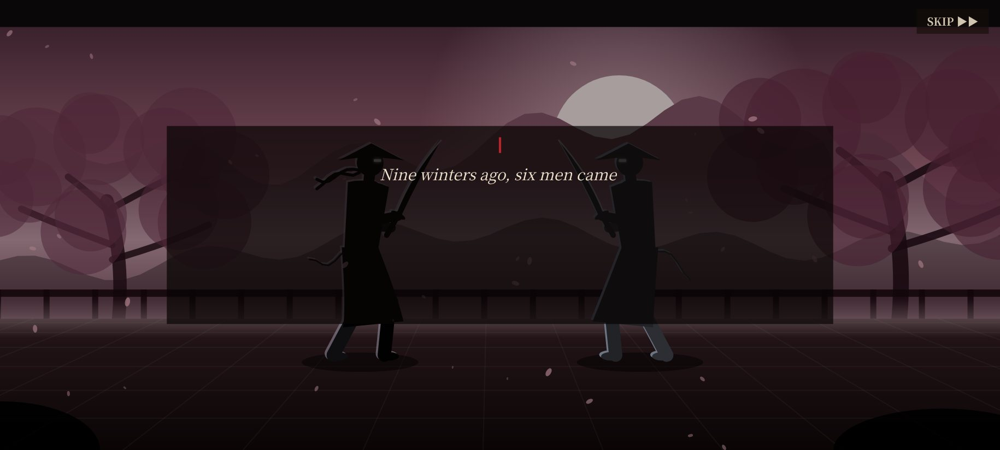

Arrow-based parry
Each enemy strike shows a direction. Swipe along it. A timing ring grades you Parry, Great or Perfect; a perfect parry slows time and arms a ×1.5 counter.
Six names in a burnt ledger. Then a seventh.
Free · No install needed in the browser · Landscape works best · Android 7.0+ for the APK · v3.0.1
A home burns. A son survives with a ledger of six names, the men who lit the fire. He becomes Kage, the shadow, and the oath becomes the only thing he carries.
Book One is a quiet, restrained revenge road across a harsh northern land: one name, one duel, one chapter at a time. No speeches. Just snow, ink and steel.
Book Two, The Seventh Name, burns the ledger’s margin open. His sister Yuki survived. A seventh mark carries the seal of his own family. The road ends at the family grave, with a choice and two endings.

Each enemy strike shows a direction. Swipe along it. A timing ring grades you Parry, Great or Perfect; a perfect parry slows time and arms a ×1.5 counter.
Katana, nodachi, twin kodachi, yari, kusarigama, kanabo, tessen, nagamaki and more, each with its own speed, reach and perks.
One health bar, infinite foes, rising difficulty. Win a round and you heal a little before the next one walks in.
59 hats, armour, cloaks and charms. Your fighter stays a black silhouette; every piece changes the outline and the stats.
Enemies hit hard and fast, with feints and delayed strikes. Unblockables flash a clear tell and must be dodged with BACK or JUMP.
Ink-wash backdrops, calligraphy stamps on a perfect parry and about 30 vibration patterns so each clash lands in your hand.







I am Kei, a solo developer in Singapore. This is the honest version of how this game came together: the walls I hit, the bugs that humbled me, and what I did about each one.
The problem. Players loved the first Kage no Chikai, and asked for more: more weapons, harder enemies, a better story. I gave them a big update, and in it I replaced the arrow-based parry with a new combat system. The feedback was instant and honest: it did not feel like the same game anymore.
How I solved it. I went back and recovered the original v1 duel code, line for line, and rebuilt every new feature on top of the untouched core: 8 weapons at the time, new enemies, story, Survival and outfits. The lesson I will keep forever: know what your game is, and protect it.
The problem. That was the exact word a tester used. They were right. The first story explained everything and felt loud.
How I solved it. I rewrote it with a grounded, restrained tone, inspired by the quiet revenge stories I love, with fully original characters. Fewer words, more silence, short lines before and after each duel. Then Book Two added a twist I had to earn: a seventh name.
The problem. Players finished fights too fast. The enemies hit slowly and died quickly, and nobody felt any danger.
How I solved it. I raised enemy HP across the board and taught them feints, delayed strikes and unblockable attacks. To stay fair, every unblockable gets a clear tell and every wind-up is capped at 2 seconds, so hard never means cheap. An AI self-test now fights all 45 duels with 4 weapons to check the curve.
The problem. The silhouettes looked like paper cut-outs. In a game that is all silhouette, that is fatal.
How I solved it. Inspired by Shadow Fight 2, I wrote a procedural animation pass with bending limbs, a breathing stance that shifts weight, steps into strikes, a unique swing per weapon, blade trails, stagger, knockdowns, dodge hops, limp death falls and cloaks that sway.
The problem. Kage no Chikai exists because my 3D project, ASHBORN in Unreal Engine 5, shipped a 219 MB first APK that felt like a tech demo. I fought that build down below 95 MB, and learnt how much size costs players.
How I solved it. So this game took the opposite road: a canvas, an ink brush and about 2 MB. It got better reviews than the 3D game, and that changed how I think about what to build next.
The problem. A web game can feel like a web page. I wanted it to feel like a phone game: instant, tactile, offline.
How I solved it. I replaced Capacitor with a lean WebView wrapper that my own build kit compiles without the Android SDK, bundled subset fonts so it looks the same everywhere, and wired native vibration through a JS bridge with about 30 patterns. Add a parry timing ring, three parry tiers, slow-motion and counters, and the whole thing still fits in about 2 MB.
Add everything around the thing players love. Never through it.
“Cringe” and “too easy” are gifts. Turn them into specific, testable changes.
Difficulty comes from reading the enemy, not from surprises you could not see.
Two megabytes means anyone can try it in seconds, on any phone.
I want to keep making small, lightweight phone games that are genuinely fun: quick to download, easy to pick up and hard to put down. 3D is still on my horizon, but now I prove the fun small first, then scale it.